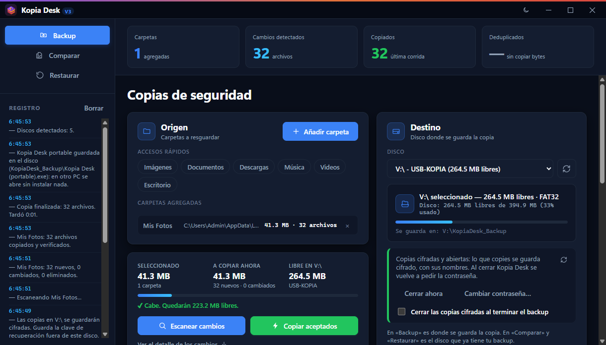
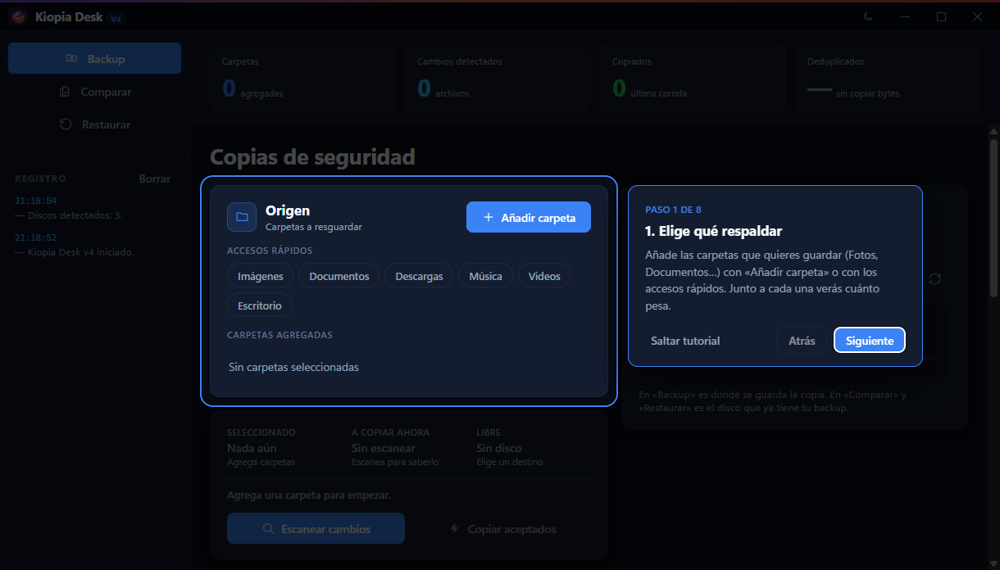
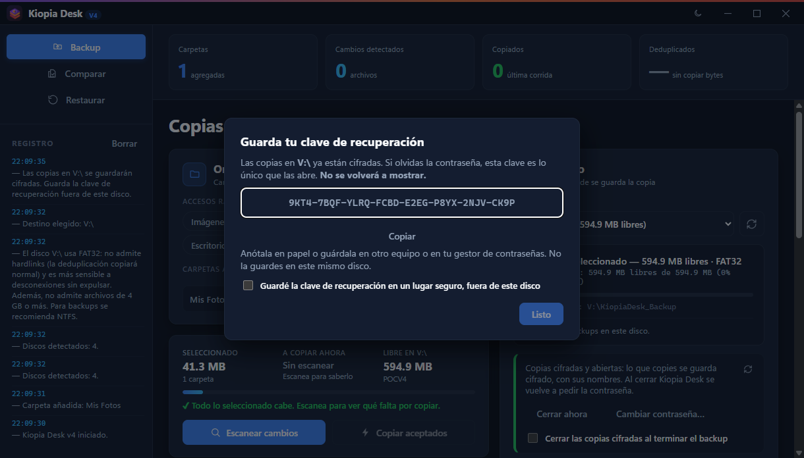
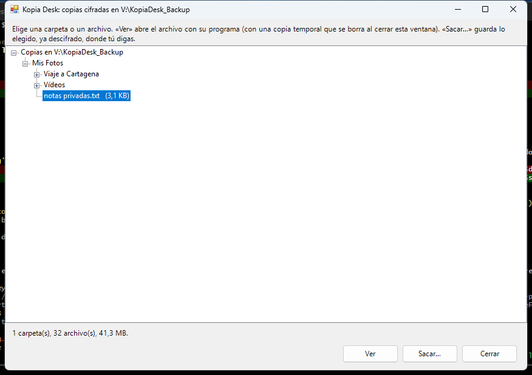

Copia verificada
Cada archivo se copia a un temporal, se compara su huella SHA-256 con la del original y sólo entonces ocupa su sitio. Un corte de luz nunca deja un archivo del backup a medias.
Kopia Desk copia tus carpetas a una USB o a un disco externo, comprueba cada archivo y sólo copia lo que cambió. Con una contraseña, nadie más puede ver ni tus archivos ni sus nombres.

Funciones
Pensado para quien quiere su copia hecha y bien hecha, sin configurar nada raro.
Cada archivo se copia a un temporal, se compara su huella SHA-256 con la del original y sólo entonces ocupa su sitio. Un corte de luz nunca deja un archivo del backup a medias.
Detecta lo nuevo, lo cambiado y lo borrado. Tú decides qué se copia antes de tocar nada.
Contenido y nombres cifrados con AES-256. Clave de recuperación por si la olvidas.
En la USB quedan Abrir-KopiaDesk y Kopia Desk portable: tus archivos, en cualquier Windows, sin instalar nada.
Antes de sobrescribir un archivo cambiado, guarda cómo era. Deshacer un error es posible.
Una carpeta entera, sólo algunas subcarpetas o únicamente lo que falta en tu PC.
Tiempo estimado antes de empezar, botón para detener sin dejar nada a medias, sigue copiando en segundo plano y la copia cifrada va igual de rápida que la normal.
Cómo funciona
La primera vez, un tutorial te enseña cada parte de la ventana.
Fotos, Documentos o cualquier otra, con un clic.
Kopia Desk la reconoce aunque cambie de letra. Si quieres, ponle contraseña.
Ves qué se va a copiar, si cabe y cuánto tarda. Pulsas «Copiar».

Cifrado · pruébalo
Pulsa Cifrar y mira qué vería alguien que encontrara tu USB. Los nombres se calculan de verdad aquí, en tu navegador, con HMAC-SHA-256, como hace Kopia Desk.


Comparativa
Son muy buenos, pero no pensados para llevarte tu backup a cualquier PC.
| Kopia Desk v3 | BitLocker | VeraCrypt portable | |
|---|---|---|---|
| Cifrar desde Windows Home | Sí | No | Sí |
| Abrir en otro PC sin instalar nada | Sí | Sí | No |
| Sin permisos de administrador | Sí | Para abrir | No |
| Cualquier USB (FAT32, exFAT, NTFS) | Sí | Sí | Sí |
| Hace el backup por ti | Sí | No | No |
| Gratis y de código abierto | Sí | No | Sí |
BitLocker cifra el disco entero y lo abre cualquier Windows, pero sólo se puede activar desde Windows Pro. VeraCrypt necesita instalar un controlador, y en un PC ajeno casi nunca tendrás permiso de administrador.
Historia
Catorce versiones en tres meses. Pulsa una para ver qué trajo.
Preguntas
Usa la clave de recuperación que Kopia Desk te mostró al cifrar: abre las copias igual que la contraseña y te deja poner una nueva. Si pierdes las dos, nadie puede abrir las copias, ni siquiera Kopia Desk. Por eso la app no te deja seguir hasta que confirmas que la guardaste fuera de la USB.
Sí. Todo, incluido el cifrado, funciona en Windows 10 y 11, Home o Pro, y sin permisos de administrador.
No. Si las copias no están cifradas, son carpetas normales que abres desde el Explorador. Si están cifradas, haz doble clic en Abrir-KopiaDesk dentro de la USB, o abre Kopia Desk (portable), que viaja en la misma USB y funciona sin instalar.
Nada grave: cada archivo se copia primero a un temporal y sólo sustituye al anterior cuando está entero y verificado. Al volver, Kopia Desk avisa de lo que quedó a medias, lo limpia y lo copia en el siguiente backup.
Es de solo lectura, así que Windows avisa antes de borrarlo. Y si aun así desaparece, Kopia Desk lo vuelve a poner la próxima vez que conectes la USB.
No. Kopia Desk no tiene cuenta, ni nube, ni estadísticas: tus archivos van de tu PC a tu disco y a ningún otro sitio.
Nada. Es gratis y de código abierto, con licencia MIT.

Descarga Kopia Desk v3, elige tus carpetas y conecta tu USB.
Descargar Kopia Desk v3Versión 3.0.1 · Windows 10 y 11 (64 bits) · Instalador en español · Incluye la versión portable